第1回
十一人がそれぞれの角度で身を傾けても、船に届くのは綱一本ぶんの力である。
Ilya Repin／Public domain／Wikimedia Commons（《ヴォルガの船曳き》1870–73年、ロシア美術館）
2026-10-01／講義資料「第1回」（教科書 1章・2.1節）の範囲。2本のロープで 500 kg の荷を吊るとき、1本のロープはどれだけの力に耐えればよいか。この問いに答えるために、ニュートンの法則から「止まっている点では力の和が 0」を導き、力をベクトルとして足したり分けたりする道具（成分・単位ベクトル・内積・連立一次方程式）を一から用意する。
授業では、台車にアームを載せた「小型移動マニピュレータ」が何度も例として出てくる（重さ 50 kg、アームのリンクは 0.4 m・0.3 m・0.2 m、持てる荷物は最大 10 kg）。こうした機械を設計するとき、最初に必要になるのは「どの部品に、どれだけの力がかかるか」である。この回で答えたい問いは次のものだ（講義資料の例題。6.2節で解く）。
答えるには、①「止まっている」ことを式にする（1章）、②斜めの力を数で表す（2章）、③力を足してよい理由を確かめる（3章）、④足す・分ける計算をする（4・5章）、の4つが要る。これが章の並びの理由である。前半（静力学）の目標は、スライドによれば次の二つ。
「機械力学」の授業では、二種類の力学を扱う。力学といえばニュートン（Isaac Newton）の法則が出発点である。
| 前半 | 後半 |
|---|---|
| 静力学（statics） 止まっている物体の力の釣合い | 動力学（dynamics） 力を受けて物体がどう動くか |
| → この先の材料力学の土台になる | → この先の機械力学・振動学の土台になる |
静力学で求めたいのは、物体が止まっているときに、ロープ・柱・支点などにどれだけの力がかかっているかである。動かない物体の「動き」は分かっている（加速度が 0）ので、そこから逆に、見えない力を割り出す。
第一法則（慣性の法則）：外から力が働かない限り、質点は同じ速度で動き続けるか、止まったままでいる。
第二法則（運動の法則、または運動方程式）：質点に外から力が働くと、質点の加速度は力に比例し、質量に反比例する。
第三法則（作用・反作用の法則）：質点Aが質点Bから力を受けているとき、AはBに、同じ直線上で、同じ大きさの、逆向きの力をおよぼしている。
ここで質点とは、大きさを無視して1点とみなした物体のこと。ロープの結び目のように、すべての力が1点に集まる対象は質点として扱える。大きさがあって回転が問題になる物体（剛体）は、第2回以降で扱う。
動機：「加速度は力に比例する」は、スライドの注のとおり質量が変わらない場合の言い方である。より一般的には、第二法則は運動量の時間変化＝力と書く。
ここから、おなじみの $m\boldsymbol{a}=\boldsymbol{F}$ を導く。
STEP 1 運動量の定義 $\boldsymbol{p}=m\boldsymbol{v}$ を (1.1) に代入する。$$\frac{d}{dt}(m\boldsymbol{v})=\boldsymbol{F}$$
STEP 2 左辺は「質量×速度」という積の微分なので、積の微分公式 $(fg)'=f'g+fg'$ を使う。$$\frac{dm}{dt}\,\boldsymbol{v}+m\,\frac{d\boldsymbol{v}}{dt}=\boldsymbol{F}$$
（積の微分公式の出所：$f(t+h)g(t+h)-f(t)g(t)=\{f(t+h)-f(t)\}g(t+h)+f(t)\{g(t+h)-g(t)\}$ と分けて $h$ で割り、$h\to 0$ とすれば $f'g+fg'$ になる。）
STEP 3 質量が変わらない（$dm/dt=0$）なら、第1項が消える。速度の時間微分は加速度 $\boldsymbol{a}=d\boldsymbol{v}/dt$ なので、$$m\boldsymbol{a}=\boldsymbol{F}\qquad(1.2)$$
□
確かめ（単位）：$dp/dt$ の単位は $\mathrm{kg\cdot(m/s)/s}=\mathrm{kg\,m/s^2}$、$ma$ も $\mathrm{kg\times m/s^2}$ で一致する（1.5節で、これを N と呼ぶ）。
動機：この回の例題は、どれも「止まっている結び目」に働く力を求める。そのための式を、法則から一段ずつ導いておく。
質点に複数の力 $\boldsymbol F_1,\boldsymbol F_2,\dots,\boldsymbol F_n$ が同時に働くとき、第二法則の $\boldsymbol F$ は、それらをベクトルとして足したもの $\sum_i\boldsymbol F_i$（合力）である。ベクトルとして足してよい理由は 3.3 節で述べる（実験事実である）。
STEP 1（止まっている＝速度が一定で 0） ある時間ずっと止まっているなら、その間の速度は $\boldsymbol v=\boldsymbol 0$ のまま変わらない。
STEP 2（加速度を出す） 加速度は速度の時間微分。一定の値（ここでは $\boldsymbol 0$）の微分は 0 なので $\boldsymbol a=d\boldsymbol v/dt=\boldsymbol 0$。
STEP 3（第二法則に入れる） (1.2) で $\boldsymbol F=\sum_i\boldsymbol F_i$ とすると、$\sum_i\boldsymbol F_i=m\boldsymbol a=m\cdot\boldsymbol 0=\boldsymbol 0$。
□
確かめ（いちばん簡単な場合）：天井から1本のロープで重さ $W$ の物体を吊るす。物体に働くのは上向きの張力 $T$ と下向きの重さ $W$ だけ。上を正として (1.3) は $T-W=0$、つまり $T=W$。これは経験とも合う。
第三法則の役目：結び目を引くロープの力と、ロープが結び目から引き返される力は、大きさが等しく逆向きである。だから「ロープが結び目を引く力」を求めれば、それがそのまま「ロープが耐えるべき力（張力）」になる。
この授業では SI単位（Le Système International d'Unités、国際単位系）を使う。力学の基本は MKS系：
質量 500 kg の物体の重さを N で求め、3桁と4桁で書け。
解答
① (1.4) に入れる：$W=mg=500\times9.81=4905\ \mathrm{N}$。
② 単位の確かめ：$\mathrm{kg\times m/s^2=N}$。
③ 3桁：$4.91\times10^3\ \mathrm{N}=4.91\ \mathrm{kN}$。4桁：$4.905\times10^3\ \mathrm{N}$。
PHOTO 1｜現実
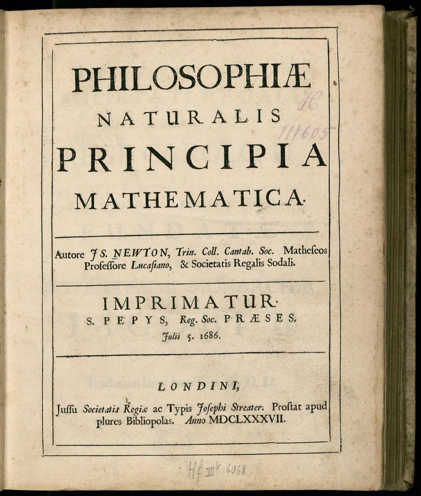
1687年、運動の三法則はこの一冊の冒頭に「公理」として置かれた。
Isaac Newton／Public domain／Wikimedia Commons（『プリンキピア』初版、1687年）
MITATE 1｜見立て
押せば押しただけ押し返される土俵の上で、二つの力はいつも一本の線の上で向き合っている。
歌川国貞（三代豊国）／Public domain／Wikimedia Commons（雲龍らの取組を描いた三枚続、1854年）
教科書 1・2節「力学の歴史」は、講義では省略（各自で読む）とされた。読み物コラム「力は見えない」も参照。
1.4節の (1.3) は「力を足すと 0」という式だった。斜めの力を足すには、向きと大きさをもつ量＝ベクトルの計算が要る。この章で、使う道具を順に用意する。講義資料は「覚えておいてほしいベクトルの使い方」として次の4つを挙げている。
| 道具 | 何に使うか（講義資料） | 本教材 |
|---|---|---|
| 1. 単位ベクトル（方向ベクトル、方向余弦） | 軸の向きを表す | 2.5・2.6節 |
| 2. 基本ベクトル（座標軸方向の単位ベクトル） | ベクトル量の表現 | 2.3節 |
| 3. 内積（スカラー積） | ベクトルの軸方向成分を求める | 2.7節 |
| 4. 外積（ベクトル積） | 力のモーメントの性質 | 第2回 |
式番号について：本教材の式番号 (2.5) などと、教科書の式番号（「教科書 式2.9」など）は別のものである。講義・試験では教科書の番号で呼ばれるので、両方を併記する。
質量・時間・長さのように、数1つ（と単位）で決まる量をスカラーという。力・速度・変位のように、大きさと向きをもつ量をベクトルという。ベクトルは矢印で表し、長さが大きさ、向きが向きを表す。
成分（2.3節）の書き方は、教科書と講義資料で違う。
| 教科書（行の形） | 講義資料（列の形） | 点の座標 |
|---|---|---|
| $\boldsymbol{V}=(V_x,V_y)$ ［教科書 式2.1］ | $\boldsymbol{V}=\begin{bmatrix}V_x\\V_y\end{bmatrix}=[V_x\ \ V_y]^T$ | $\mathrm{A}(x,y)$ |
$T$ は「転置」（行と列を入れかえる）の記号。中身は同じで、書く向きが違うだけである。本教材は読みやすさのため本文では行の形で書き、行列の式（5.3節）では列の形で書く。試験では講義資料の流儀（列ベクトル）で書けるようにしておく。点の座標 $\mathrm{A}(x,y)$ は「場所」で、ベクトル（向きと大きさ）とは区別する。
つなぎ方は3つ以上でも同じで、$\boldsymbol a+\boldsymbol b+\boldsymbol c$ は矢印を順につないだ折れ線の始点から終点への矢印である。足す順番を変えても終点は変わらない（$\boldsymbol a+\boldsymbol b=\boldsymbol b+\boldsymbol a$：平行四辺形の2通りの回り方）。
動機：矢印の作図は直感的だが、力が3つ、4つと増えると正確に描けない。そこで矢印を数の組に直し、計算で扱う。
和と定数倍は成分ごと：$\boldsymbol a+\boldsymbol b=(a_x+b_x)\boldsymbol i+(a_y+b_y)\boldsymbol j$、$k\boldsymbol a=ka_x\boldsymbol i+ka_y\boldsymbol j$。（理由：(2.1) の形に書いて、$\boldsymbol i$ の項どうし、$\boldsymbol j$ の項どうしをまとめればよい。図2.1(a) で、つないだ矢印の横の進み・縦の進みがそれぞれ足し算になることと同じ。）
STEP 1（2次元） 矢印 $\boldsymbol V$ を斜辺、横の進み $|V_x|$ と縦の進み $|V_y|$ を2辺とする直角三角形ができる。三平方の定理から $V^2=V_x^2+V_y^2$（2乗するので符号は関係ない）。
STEP 2（3次元） まず床（$xy$ 面）の上の影の長さが STEP 1 より $\sqrt{V_x^2+V_y^2}$。この影と高さ $|V_z|$ が、$\boldsymbol V$ を斜辺とする別の直角三角形の2辺になる（高さは床に垂直だから）。もう一度三平方の定理を使って $V^2=(V_x^2+V_y^2)+V_z^2$。
□
最小の具体例：$\boldsymbol V=(3,4)$ なら $V=\sqrt{9+16}=5$。$\boldsymbol V=(2,-3,6)$ なら $V=\sqrt{4+9+36}=\sqrt{49}=7$。
動機：力は「$x$ 軸から角 $\theta$ の向きに大きさ $F$」の形で与えられることが多い。$\theta$ が 90° を超えても使える成分の式と、成分から角度に戻すときの落とし穴を、ここで整理しておく。
$0^\circ\lt\theta\lt90^\circ$ では、この点から $x$ 軸に垂線を下ろした直角三角形（斜辺1）で、横の辺が $\cos\theta$、縦の辺が $\sin\theta$ になり、直角三角形での定義と一致する。$\theta$ が大きくなると点は第2・第3・第4象限に入り、座標の符号がそのまま cos・sin の符号になる。
理由：$(\cos\theta,\sin\theta)$ は向き $\theta$ を向いた長さ1の矢印（単位円上の点）で、2.2節の定数倍によりそれを $F$ 倍すれば、同じ向きで長さ $F$ の矢印になる。
成分から角度へ戻す：$\tan\theta=F_y/F_x$ なので電卓で $\tan^{-1}(F_y/F_x)$ を押したくなるが、$\tan^{-1}$ は $-90^\circ$〜$90^\circ$ の角しか返さない。$F_x\lt0$（左向き）のときは 180° を足す。関数電卓やプログラムの atan2(Fy, Fx) は、象限まで含めて正しい角（$-180^\circ$〜$180^\circ$）を返す。
| $F_x$ の符号 | 正しい角 $\theta$ |
|---|---|
| $F_x\gt0$ | $\tan^{-1}(F_y/F_x)$ のまま |
| $F_x\lt0$ | $\tan^{-1}(F_y/F_x)+180^\circ$ |
| $F_x=0$ | $F_y\gt0$ なら $90^\circ$、$F_y\lt0$ なら $270^\circ$（$=-90^\circ$） |
(1) $x$ 軸から 150° の向きで大きさ 10 N の力の成分を求めよ。(2) 成分が $(-3,\ -4)$ N の力の大きさと向き（$x$ 軸から反時計回りの角）を求めよ。
解答
① (1) (2.3) に入れる：$\boldsymbol F=(10\cos150^\circ,\ 10\sin150^\circ)=(10\times(-0.8660),\ 10\times0.5000)=(-8.660,\ 5.000)\ \mathrm{N}$。
② (1) の確かめ：150° は第2象限なので $(-,+)$。大きさ $\sqrt{8.660^2+5.000^2}=10.00$ で元に戻る。
③ (2) 大きさ：$\sqrt{3^2+4^2}=5.00\ \mathrm{N}$。
④ (2) 向き：$\tan^{-1}\{(-4)/(-3)\}=\tan^{-1}(1.333)=53.13^\circ$。しかし $F_x\lt0$ なので 180° を足して $\theta=233.1^\circ$（第3象限、左下）。atan2(-4, -3) $=-126.9^\circ$ も同じ向き（$-126.9^\circ+360^\circ=233.1^\circ$）。
動機：ロープや部材が引く力は、向きは形から分かるが、大きさが分からない。そこで「向きだけ」を表す長さ1のベクトルを作り、力を「大きさ×向き」と書けるようにする（5.3節の分解で使う）。
STEP 1（長さを1にする） 2.2節の定数倍で、ベクトルを数 $1/V$ 倍すると、向きはそのまま（$1/V\gt0$ だから）で長さが $V\times(1/V)=1$ になる。各成分も $1/V$ 倍される。
STEP 2（確かめ） (2.2) で大きさを計算すると $\sqrt{(V_x/V)^2+(V_y/V)^2}=\sqrt{(V_x^2+V_y^2)/V^2}=\sqrt{V^2/V^2}=1$。
STEP 3（なぜ「方向余弦」と呼ぶか） $\boldsymbol{V}$ が $x$ 軸となす角を $\alpha$、$y$ 軸となす角を $\beta$ とする。図2.3の直角三角形で cos の定義（隣の辺÷斜辺）から $V_x=V\cos\alpha$、$V_y=V\cos\beta$。よって $$\boldsymbol{v}=(\cos\alpha,\ \cos\beta)$$ 単位ベクトルの成分は、各軸とのなす角の余弦（cos）そのもの。だから方向余弦という。
□
3次元でも同じ形になる（第3回で使うので、ここで覚えておく）。$z$ 軸とのなす角を $\gamma$ とすると、
$$\begin{aligned}\boldsymbol{v}&=\left[\frac{V_x}{\sqrt{V_x^2+V_y^2+V_z^2}}\ \ \frac{V_y}{\sqrt{V_x^2+V_y^2+V_z^2}}\ \ \frac{V_z}{\sqrt{V_x^2+V_y^2+V_z^2}}\right]^T\&=[\cos\alpha\ \ \cos\beta\ \ \cos\gamma]^T\end{aligned}\qquad(2.5)$$確かめ：単位ベクトルの成分の2乗和は必ず1（$\cos^2\alpha+\cos^2\beta+\cos^2\gamma=1$）。計算のたびに検算に使える。
力 $\boldsymbol{F}=(30,\ 40)\ \mathrm{N}$ の大きさ、単位ベクトル、$x$ 軸・$y$ 軸とのなす角を求めよ。
解答
① 大きさ：$F=\sqrt{30^2+40^2}=\sqrt{2500}=50.0\ \mathrm{N}$。
② 単位ベクトル：$\boldsymbol{f}=(30/50,\ 40/50)=(0.600,\ 0.800)$。検算：$0.6^2+0.8^2=1$。
③ $\cos\alpha=0.600$ より $\alpha=53.1^\circ$、$\cos\beta=0.800$ より $\beta=36.9^\circ$。確かめ：$\alpha+\beta=90^\circ$（2次元では $x$ 軸と $y$ 軸が直交しているので当然）。
$\boldsymbol{V}=(2,\ -3,\ 6)$ の単位ベクトルと、各軸とのなす角を求めよ。
解答
① $V=\sqrt{4+9+36}=\sqrt{49}=7$。
② $\boldsymbol{v}=(2/7,\ -3/7,\ 6/7)=(0.2857,\ -0.4286,\ 0.8571)$。
③ $\alpha=\cos^{-1}0.2857=73.4^\circ$、$\beta=\cos^{-1}(-0.4286)=115.4^\circ$、$\gamma=\cos^{-1}0.8571=31.0^\circ$。$\cos^{-1}$ は 0°〜180° を返すので、なす角では象限の心配はいらない。
④ 検算：$(4+9+36)/49=1$。$y$ 成分が負なので、$y$ 軸とのなす角は 90° より大きい。
動機：実際の問題では、角度ではなく点の座標（部材の両端など）が与えられることが多い（教科書 例題2・3）。座標から向きを作る方法を用意する。
理由：つなぎ（2.2節）で、O→P とつないだ先に P→Q をつなぐと O→Q になる：$\boldsymbol r_{\mathrm P}+\overrightarrow{\mathrm{PQ}}=\boldsymbol r_{\mathrm Q}$。両辺から $\boldsymbol r_{\mathrm P}$ を引けば (2.6) の左の式。右の式は、それを (2.4) で長さ1にしたもの。
点 $\mathrm A(0,0)$、$\mathrm B(0,2)$、$\mathrm C(5,-1)$（単位 m）について、C から A へ向かう単位ベクトル $\boldsymbol u_{\mathrm{CA}}$ と、C から B へ向かう単位ベクトル $\boldsymbol u_{\mathrm{CB}}$ を求めよ。
解答
① C→A：終点−始点 $=(0-5,\ 0-(-1))=(-5,\ 1)$。長さ $\sqrt{25+1}=\sqrt{26}=5.099$。
② $\boldsymbol u_{\mathrm{CA}}=(-5,\ 1)/5.099=(-0.9806,\ 0.1961)$。
③ C→B：$(0-5,\ 2-(-1))=(-5,\ 3)$。長さ $\sqrt{25+9}=\sqrt{34}=5.831$。$\boldsymbol u_{\mathrm{CB}}=(-0.8575,\ 0.5145)$。
④ 検算：$0.9806^2+0.1961^2=1.000$、$0.8575^2+0.5145^2=1.000$。どちらも左上向き（$(-,+)$）で、図2.4と合う。
動機：斜面に沿った力、部材の方向の力のように、「ある向きに沿った成分」を知りたい場面が多い。それを1回の計算で取り出す道具が内積である。
使い方：$\boldsymbol{u}$ を単位ベクトル（$u=1$）にとると $$\boldsymbol{a}\cdot\boldsymbol{u}=a\cos\theta\qquad(2.8)$$ これは $\boldsymbol a$ の$\boldsymbol{u}$ 方向成分である。$\boldsymbol{a}$ の先端から $\boldsymbol{u}$ の直線に垂線を下ろすと、直角三角形の隣の辺の長さが $a\cos\theta$ になるからだ（$\theta\gt90^\circ$ なら負：$\boldsymbol u$ と逆向きの成分）。
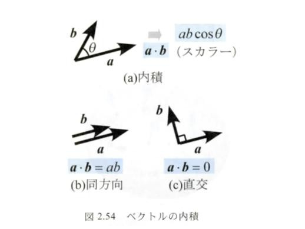
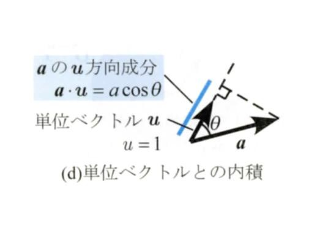
実際の計算は成分で行う。その式を導く。
STEP 1（基本ベクトルどうしの内積） 定義 (2.7) に当てはめる。$\boldsymbol{i}$ と $\boldsymbol{i}$ は長さ1・なす角0なので $\boldsymbol{i}\cdot\boldsymbol{i}=1\cdot1\cdot\cos0^\circ=1$。$\boldsymbol{i}$ と $\boldsymbol{j}$ は直交（なす角90°）なので $\boldsymbol{i}\cdot\boldsymbol{j}=1\cdot1\cdot\cos 90^\circ=0$。同様に $\boldsymbol{j}\cdot\boldsymbol{j}=1$、$\boldsymbol j\cdot\boldsymbol i=0$。
STEP 2（分配法則を確かめる） 展開するには $\boldsymbol u\cdot(\boldsymbol b+\boldsymbol c)=\boldsymbol u\cdot\boldsymbol b+\boldsymbol u\cdot\boldsymbol c$ が要る。$\boldsymbol u$ を単位ベクトルとすると、(2.8) より左辺は「$\boldsymbol b+\boldsymbol c$ の $\boldsymbol u$ 方向の影の長さ」。つなぎ（図2.1(a)）で $\boldsymbol b$ の先に $\boldsymbol c$ をつなぐと、影も $\boldsymbol b$ の影の先に $\boldsymbol c$ の影がつながる（符号つきで）ので、影の長さは足し算になる。一般の $\boldsymbol a=a\boldsymbol u$ では両辺を $a$ 倍すればよい。
STEP 3（展開する） $\boldsymbol{a}=a_x\boldsymbol{i}+a_y\boldsymbol{j}$、$\boldsymbol{b}=b_x\boldsymbol{i}+b_y\boldsymbol{j}$ とおき、STEP 2 の分配法則で項ごとに分ける。$$\boldsymbol{a}\cdot\boldsymbol{b}=a_xb_x(\boldsymbol{i}\cdot\boldsymbol{i})+a_xb_y(\boldsymbol{i}\cdot\boldsymbol{j})+a_yb_x(\boldsymbol{j}\cdot\boldsymbol{i})+a_yb_y(\boldsymbol{j}\cdot\boldsymbol{j})$$
STEP 4（STEP 1 を代入） $\boldsymbol{i}\cdot\boldsymbol{j}=\boldsymbol{j}\cdot\boldsymbol{i}=0$ の項が消え、残りは $\boldsymbol i\cdot\boldsymbol i=\boldsymbol j\cdot\boldsymbol j=1$ なので (2.9) になる。
□
確かめ：(2.9) で $\boldsymbol b=\boldsymbol i=(1,0)$ とおくと $\boldsymbol a\cdot\boldsymbol i=a_x$。「$x$ 成分」とは「$x$ 軸方向の成分」のことで、(2.8) と矛盾しない。また $\boldsymbol a\cdot\boldsymbol a=a_x^2+a_y^2=a^2$ は (2.2) と一致する（なす角 0 なので $\cos0^\circ=1$）。
なす角を出す：(2.7) と (2.9) を等しいとおくと $\cos\theta=\dfrac{\boldsymbol a\cdot\boldsymbol b}{ab}=\dfrac{a_xb_x+a_yb_y}{ab}$。内積が 0 なら $\theta=90^\circ$（直交）。
$\boldsymbol a=(3,\ 4)$ の、単位ベクトル $\boldsymbol u=(1,\ 1)/\sqrt2$ 方向の成分を求めよ。
解答
① $\boldsymbol u$ が単位ベクトルか確かめる：$(1/\sqrt2)^2+(1/\sqrt2)^2=1$。
② (2.9)：$\boldsymbol a\cdot\boldsymbol u=3\times\dfrac{1}{\sqrt2}+4\times\dfrac{1}{\sqrt2}=\dfrac{7}{\sqrt2}=\dfrac{7}{1.414}=4.950$。
③ 確かめ：$a=5$ なので、成分 4.950 は 5 より少し小さい。$\boldsymbol a$（$x$ 軸から 53.1°）と $\boldsymbol u$（45°）のなす角は 8.1° と小さく、$5\cos8.1^\circ=4.950$ と一致する。
動機：5.3節で、力を任意の2方向に分ける問題は「未知数2つの連立一次方程式」になる。その解き方と、解が決まらない場合の見分け方を用意する。
STEP 1（$x_2$ を消す） $x_2$ の係数をそろえるため、(i) に $a_{22}$、(ii) に $a_{12}$ を掛ける：$a_{11}a_{22}x_1+a_{12}a_{22}x_2=a_{22}b_1$、$a_{21}a_{12}x_1+a_{22}a_{12}x_2=a_{12}b_2$。
STEP 2（引く） 上から下を引くと $x_2$ の項 $a_{12}a_{22}x_2-a_{22}a_{12}x_2=0$ が消え、$(a_{11}a_{22}-a_{12}a_{21})x_1=a_{22}b_1-a_{12}b_2$、つまり $d\,x_1=a_{22}b_1-a_{12}b_2$。
STEP 3（$x_1$ を消す） 同じ考えで、(ii) に $a_{11}$、(i) に $a_{21}$ を掛けて引く：$a_{11}a_{22}x_2-a_{21}a_{12}x_2=a_{11}b_2-a_{21}b_1$、つまり $d\,x_2=-a_{21}b_1+a_{11}b_2$。
STEP 4（$d$ で割る） $d\neq0$ なら両辺を $d$ で割れて (2.10)。
□
$2x_1+x_2=5$、$x_1-x_2=1$ を解け。
解答
① 係数：$a_{11}=2,\ a_{12}=1,\ a_{21}=1,\ a_{22}=-1$、$b_1=5,\ b_2=1$。
② $d=2\times(-1)-1\times1=-3$。
③ (2.10)：$x_1=\{(-1)(5)-(1)(1)\}/(-3)=-6/(-3)=2$、$x_2=\{-(1)(5)+(2)(1)\}/(-3)=-3/(-3)=1$。
④ 検算（元の式に代入）：$2\cdot2+1=5$、$2-1=1$。どちらも成り立つ。
$d=0$ のとき：$d=a_{11}a_{22}-a_{12}a_{21}=0$ は、2本の式の左辺の係数が比例している（2直線の傾きが同じ）ことを表す。たとえば $x_1+x_2=1$ と $2x_1+2x_2=3$ は平行で解がなく、$x_1+x_2=1$ と $2x_1+2x_2=2$ は同じ直線で解が無数にある。どちらにしても「ただ1つ」には決まらない。
講義資料が「今日のポイント」として挙げるのは一文、「力はベクトルである」。この章では、この一文が何を主張しているのかを、2章の道具を使って正確に述べる。
力は矢印で表し、矢印の長さが大きさ、矢印の向きが力の向きを表す（教科書 図2.1）。しかし力は「大きさと向き」だけでは決まらない。本を両側から押すとき、同じ高さで押せば本は止まったままだが、押す高さを上下にずらすと本は回り出す（教科書 図2.2）。力の作用する位置も効いている。
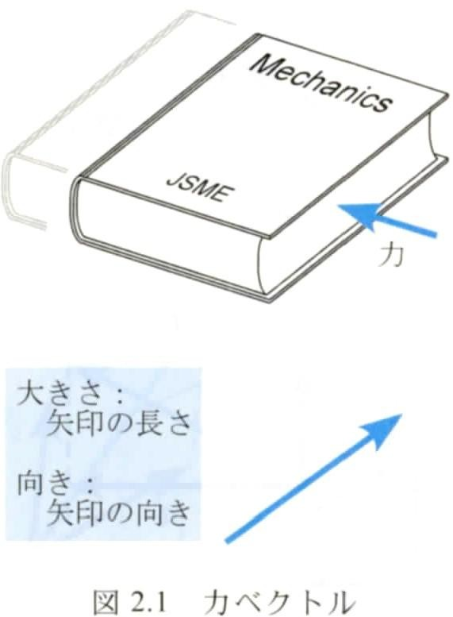
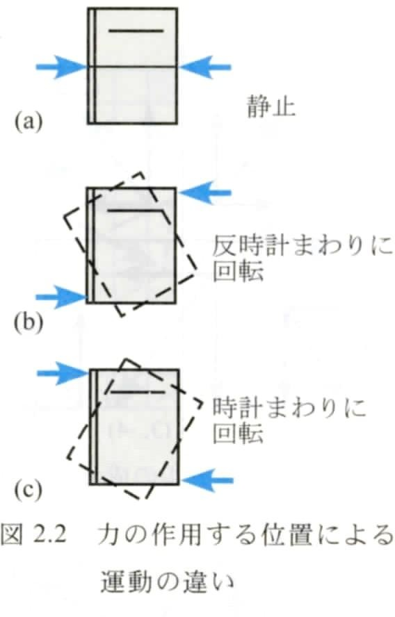
2章の道具を使うと、力は次のどちらかの形で書ける。
どちらの形でも、作用点は別に覚えておく（この回は全部同じ1点なので省略できる）。
動機：1.4節の $\sum\boldsymbol F_i=\boldsymbol 0$ では、力を2.2節のルール（平行四辺形）で足した。しかし「力が矢印で描ける」ことと「矢印のルールで足してよい」ことは別の話である。矢印で描けても、足し方まで矢印のルールに従う保証は、数学からは出てこない。
実験による確かめ：小さな輪に3本の糸を結び、それぞれをばねばかりで引いて、輪が止まった状態にする。3つの目盛り（大きさ）と糸の向きを記録し、2本の力を縮尺どおりの矢印で描いて平行四辺形を作ると、その対角線は3本目の力と大きさが等しく、向きが逆になる（測定の誤差の範囲で）。つまり「2本の力のベクトル和」が「3本目の力を打ち消す1本の力」と同じ働きをしている。高校物理の「力の合成」の実験と同じものである。ニュートンも『プリンキピア』で、運動の法則のすぐ後に、この平行四辺形の規則を置いている。
この実験事実があるから、2章のベクトルの計算（成分ごとの足し算、内積）を、力にそのまま使ってよい。
MITATE 2｜見立て
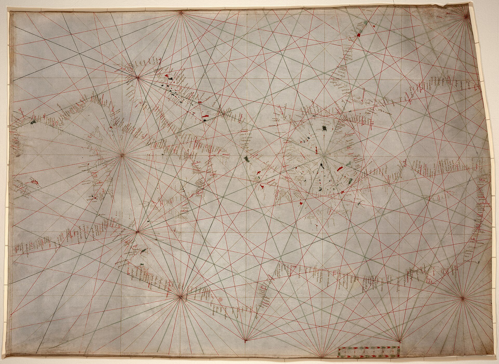
十四世紀の海図では、羅針の一点から同じ向きの線が地図の果てまで引かれ、船はその一本に乗って進んだ。
作者不詳（ジェノヴァ製か）／Public domain／Wikimedia Commons（ポルトラーノ海図、1320〜50年頃）
ここでは、すべての力が1点に働く場合を考える。3.3節の実験事実により、合力は2.2節のベクトルの和で計算してよい。
STEP 1 各力を基本ベクトルで書く（(2.1)）：$\boldsymbol F_i=F_{ix}\boldsymbol i+F_{iy}\boldsymbol j$。
STEP 2 (4.1) に代入し、和の順番を入れかえて $\boldsymbol i$ の項と $\boldsymbol j$ の項をまとめる（ベクトルの和は順番によらない、2.2節）：$\boldsymbol R=(\sum_iF_{ix})\boldsymbol i+(\sum_iF_{iy})\boldsymbol j$。
STEP 3 $\boldsymbol i$ の係数が $R_x$、$\boldsymbol j$ の係数が $R_y$ なので (4.2)。
□
成分 $(R_x,R_y)$ が出たら、大きさは (2.2) で $R=\sqrt{R_x^2+R_y^2}$、向きは 2.4節の規則（$R_x\lt0$ なら $\tan^{-1}$ に 180° を足す）で出す。
大きさ 100 N の力 $\boldsymbol{F}_1$（$x$ 軸方向）と、大きさ 100 N の力 $\boldsymbol{F}_2$（$x$ 軸から 60°）が1点に働く。合力の大きさと向きを求めよ。
解答
① 成分に直す（(2.3)）：$\boldsymbol{F}_1=(100,\ 0)$、$\boldsymbol{F}_2=(100\cos60^\circ,\ 100\sin60^\circ)=(50.0,\ 86.60)\ \mathrm{N}$。
② 成分ごとに足す（(4.2)）：$\boldsymbol{R}=(150.0,\ 86.60)\ \mathrm{N}$。
③ 大きさ：$R=\sqrt{150^2+86.60^2}=\sqrt{22500+7500}=\sqrt{30000}=173.2\ \mathrm{N}$。
④ 向き：$R_x\gt0$ なので $\tan^{-1}(86.60/150.0)=30.0^\circ$（2力のちょうど真ん中。同じ大きさの2力なので平行四辺形がひし形になり、対角線が角を2等分するから）。
⑤ $F_1+F_2=200\ \mathrm{N}$ だが $R=173\ \mathrm{N}$。大きさの和と合力の大きさは等しくない。
問い：$x$ 軸から20°の向きの32 Nの力 $\boldsymbol{F}_1$ と、190°の向きの64 Nの力 $\boldsymbol{F}_2$。合力 $\boldsymbol{R}$ の向き（角度）は？
方針：角度どうしを足したり平均したりはできない（大きさを足せないのと同じ理由）。成分に直して足し、最後に角度に戻す。
STEP 1（成分に直す） $x$ 軸から角 $\theta$ の向きで大きさ $F$ の力は、直角三角形の cos・sin の定義から $(F\cos\theta,\ F\sin\theta)$。§2.5 の方向余弦と同じ考え方で、$\theta$ が90°を超えても cos・sin の符号が向きを自動で表してくれる。
$$\boldsymbol{F}_1=(32\cos20^\circ,\ 32\sin20^\circ)=(30.07,\ 10.94)\ \mathrm{N}$$ $$\boldsymbol{F}_2=(64\cos190^\circ,\ 64\sin190^\circ)=(64\times(-0.9848),\ 64\times(-0.1736))=(-63.03,\ -11.11)\ \mathrm{N}$$STEP 2（成分ごとに足す） 式(2.12)のとおり。
$$\boldsymbol{R}=(30.07-63.03,\ 10.94-11.11)=(-32.96,\ -0.17)\ \mathrm{N}$$STEP 3（大きさ） 三平方の定理で $R=\sqrt{32.96^2+0.17^2}=33.0\ \mathrm{N}$。
STEP 4（角度に戻す：ここが落とし穴） $\tan\varphi=R_y/R_x=(-0.17)/(-32.96)=0.00512$ なので、電卓で $\tan^{-1}$ を押すと $0.29^\circ$ が出る。しかしこれは間違い。$\tan^{-1}$ は $-90^\circ$〜$90^\circ$ の角しか返さないので、$R_x$ が負（左向き）のときは180°を足す必要がある。$R_x\lt0,\ R_y\lt0$ なので $\boldsymbol{R}$ は第3象限にあり、
$$\varphi=180^\circ+0.29^\circ=180.3^\circ$$答え：合力は約33.0 N、向きは $x$ 軸から約180.3°（ほぼ真左、わずかに下向き）。
検算（感覚で確かめる）：20°と190°は170°違い、ほぼ逆向き。逆向きの力は引き算に近いので、大きさは $64-32=32$ N前後になり、向きは大きいほうの力（190°）に近くなる。答えの33.0 N・180.3°はこの見当と合う。
象限の判定：$R_x\gt0$ なら $\tan^{-1}$ の値のまま、$R_x\lt0$ なら $+180^\circ$。関数電卓やプログラムの atan2(Ry, Rx) を使えば、象限まで含めて正しい角度が一度に出る（この例では $-179.7^\circ$、つまり $180.3^\circ$ と同じ向き）。
もし知りたいのが「2つのベクトルのなす角」なら、それは $190^\circ-20^\circ=170^\circ$。成分から求めるなら内積(2.65)を使い、$\cos\theta=\dfrac{\boldsymbol{F}_1\cdot\boldsymbol{F}_2}{F_1F_2}$ から出せる。
2力のなす角 $\varphi$ が分かっているとき、合力の大きさは成分を経由せずに出せる。内積 (2.7) を使って導き、特別な場合で既知の結果に戻ることを確かめる。
STEP 1 大きさの2乗は自分自身との内積：$R^2=\boldsymbol R\cdot\boldsymbol R$（2.7節の確かめ）。$\boldsymbol R=\boldsymbol F_1+\boldsymbol F_2$ を入れる。
STEP 2 分配法則（2.7節 STEP 2）で展開する：$(\boldsymbol F_1+\boldsymbol F_2)\cdot(\boldsymbol F_1+\boldsymbol F_2)=\boldsymbol F_1\cdot\boldsymbol F_1+\boldsymbol F_1\cdot\boldsymbol F_2+\boldsymbol F_2\cdot\boldsymbol F_1+\boldsymbol F_2\cdot\boldsymbol F_2$。
STEP 3 $\boldsymbol F_1\cdot\boldsymbol F_1=F_1^2$、$\boldsymbol F_2\cdot\boldsymbol F_2=F_2^2$、$\boldsymbol F_1\cdot\boldsymbol F_2=\boldsymbol F_2\cdot\boldsymbol F_1=F_1F_2\cos\varphi$（定義 (2.7)）を入れると (4.3)。
□
確かめ：
高校で習う余弦定理 $c^2=a^2+b^2-2ab\cos C$ と符号が違うのは、$C$ が三角形の内角（$=180^\circ-\varphi$）だからである（$\cos(180^\circ-\varphi)=-\cos\varphi$）。
理由：$\boldsymbol F=\boldsymbol F_1+\boldsymbol F_2$ を満たす組は、$\boldsymbol F_1$ を好きに選んで $\boldsymbol F_2=\boldsymbol F-\boldsymbol F_1$ とすれば必ず作れる。未知数（2次元で $\boldsymbol F_1,\boldsymbol F_2$ の成分4つ）に対して、式（成分ごとの等式）が2本しかないからだ。分解を1つに決めるには、未知数を2つに減らす条件が要る。典型的なのは2つの分力の向き（作用線）を指定すること（図2.19）で、未知数が2つの大きさだけになる。向きは「ロープの方向」「部材の方向」のように構造から決まることが多い。
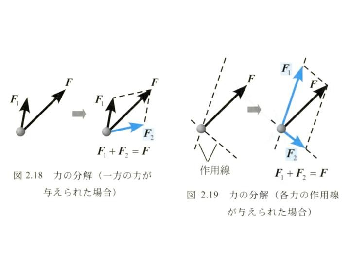
動機：いちばんよく使うのは、互いに直交する2方向（$x$ と $y$、斜面に沿う向きと垂直な向き）への分解である。この場合は連立方程式を解かなくても、内積だけで分力が出る。
STEP 1 向きを指定したので、分力は「数×単位ベクトル」：$\boldsymbol F=F_u\boldsymbol u+F_n\boldsymbol n$ と書け、未知数は $F_u,F_n$ の2つ。
STEP 2 $F_n$ の項を消すため、両辺と $\boldsymbol u$ の内積をとる：$\boldsymbol F\cdot\boldsymbol u=F_u(\boldsymbol u\cdot\boldsymbol u)+F_n(\boldsymbol n\cdot\boldsymbol u)$。
STEP 3 $\boldsymbol u\cdot\boldsymbol u=1$（長さ1）、$\boldsymbol n\cdot\boldsymbol u=0$（直交）なので $F_u=\boldsymbol F\cdot\boldsymbol u$。同様に $\boldsymbol n$ との内積で $F_n=\boldsymbol F\cdot\boldsymbol n$。
□
確かめ：$\boldsymbol u=\boldsymbol i$、$\boldsymbol n=\boldsymbol j$ とすると $F_u=F_x$、$F_n=F_y$ で、(2.1) に戻る。
傾き 30° のなめらかな斜面に、質量 10.0 kg の物体が置かれている。物体の重さを、斜面に沿って下る向きの成分と、斜面に垂直な向きの成分に分けよ。
解答
① 物体に働く重さ $W=10.0\times9.81=98.1\ \mathrm N$（下向き）を分解の対象とする。
② 座標軸：$x$ 右、$y$ 上。斜面は右下がりで、水平と 30°。
③ 向きの単位ベクトル：斜面に沿って下る向き $\boldsymbol u=(\cos30^\circ,\ -\sin30^\circ)=(0.8660,\ -0.5000)$、斜面に垂直で斜面に押しつける向き $\boldsymbol n=(-\sin30^\circ,\ -\cos30^\circ)=(-0.5000,\ -0.8660)$。直交の確かめ：$\boldsymbol u\cdot\boldsymbol n=-0.4330+0.4330=0$。重さは $\boldsymbol W=(0,\ -98.1)\ \mathrm N$。
④ (5.1)：$W_u=\boldsymbol W\cdot\boldsymbol u=0\times0.8660+(-98.1)(-0.5000)=49.05\ \mathrm N$、$W_n=\boldsymbol W\cdot\boldsymbol n=(-98.1)(-0.8660)=84.96\ \mathrm N$。
⑤ 答え：斜面に沿う成分 $W\sin30^\circ=49.1\ \mathrm N$、垂直な成分 $W\cos30^\circ=85.0\ \mathrm N$。
⑥ 確かめ：$\sqrt{49.05^2+84.96^2}=98.1$ で元の重さに戻る。傾き 0° なら沿う成分 0・垂直成分 $W$、90°（鉛直な壁）なら沿う成分 $W$ になり、どちらも直感と合う。
動機：ロープや部材の向きは、たいてい直交していない。そのときは (5.1) が使えない（STEP 3 で $\boldsymbol n\cdot\boldsymbol u=0$ を使ったため）。一般の場合を、2.8節の連立一次方程式として解く。
力 $\boldsymbol{F}=(F_x,F_y)$ を、向きを表す単位ベクトル $\boldsymbol{u}_1,\boldsymbol{u}_2$ の方向に分解したい。
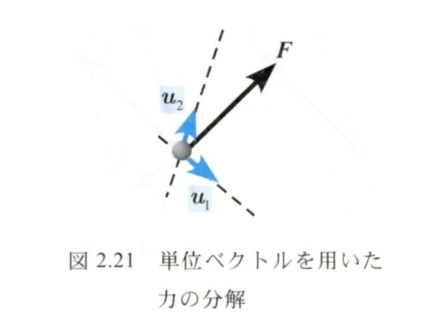
STEP 1（未知数を「大きさ」だけにする） 分力の向きは分かっているので、分からないのは大きさだけ。そこで分力を「大きさ×単位ベクトル」と書く（3.2節）。$$\boldsymbol{F}_1=F_1\boldsymbol{u}_1,\qquad \boldsymbol{F}_2=F_2\boldsymbol{u}_2$$ 未知数は数 $F_1,F_2$ の2つだけになる。
STEP 2（分解の条件を式にする） 分力を合成すると元の力に戻る：$\boldsymbol{F}_1+\boldsymbol{F}_2=\boldsymbol{F}$。STEP 1 を代入して $$F_1\boldsymbol{u}_1+F_2\boldsymbol{u}_2=\boldsymbol{F}$$
STEP 3（成分に分ける） ベクトルの等式は「$x$ 成分どうし、$y$ 成分どうしが等しい」という2本の式と同じ（(2.1) で $\boldsymbol i,\boldsymbol j$ の係数を比べる）。列ベクトルで書くと $$F_1\begin{bmatrix}u_{1x}\\u_{1y}\end{bmatrix}+F_2\begin{bmatrix}u_{2x}\\u_{2y}\end{bmatrix}=\begin{bmatrix}u_{1x}&u_{2x}\\u_{1y}&u_{2y}\end{bmatrix}\begin{bmatrix}F_1\\F_2\end{bmatrix}=\begin{bmatrix}F_x\\F_y\end{bmatrix}$$ つまり $$u_{1x}F_1+u_{2x}F_2=F_x\quad\text{(i)},\qquad u_{1y}F_1+u_{2y}F_2=F_y\quad\text{(ii)}$$ これは $F_1,F_2$ についての連立一次方程式である。行列の列が $\boldsymbol u_1,\boldsymbol u_2$ になっていることに注意。
STEP 4（2.8節の公式に当てはめる） (2.10) で $x_1=F_1,\ x_2=F_2$、$a_{11}=u_{1x},\ a_{12}=u_{2x},\ a_{21}=u_{1y},\ a_{22}=u_{2y}$、$b_1=F_x,\ b_2=F_y$ とおく。行列式は $d=a_{11}a_{22}-a_{12}a_{21}=u_{1x}u_{2y}-u_{2x}u_{1y}$。
STEP 5（$F_1$） $F_1=(a_{22}b_1-a_{12}b_2)/d=(u_{2y}F_x-u_{2x}F_y)/d$。（消去法で直接やるなら：(i) に $u_{2y}$、(ii) に $u_{2x}$ を掛けて引くと $F_2$ の項 $u_{2x}u_{2y}F_2-u_{2y}u_{2x}F_2=0$ が消え、$dF_1=u_{2y}F_x-u_{2x}F_y$。）
STEP 6（$F_2$） $F_2=(-a_{21}b_1+a_{11}b_2)/d=(-u_{1y}F_x+u_{1x}F_y)/d$。（消去法なら：(ii) に $u_{1x}$、(i) に $u_{1y}$ を掛けて引く。）
□
符号の読み方：
向きを先に決めつけず、とりあえず $\boldsymbol{u}_i$ の向きを仮定して解き、符号で本当の向きを知る。これが成分で解くことの強みである。
確かめ（特別な場合で既知の結果に戻るか）：
力 $\boldsymbol{F}=(0,\ -200)\ \mathrm{N}$ を、$\boldsymbol{u}_1=(1,\ 0)$ と $\boldsymbol{u}_2=(\cos45^\circ,\ \sin45^\circ)$ の方向に分解せよ。分力の本当の向きも答えよ。
解答
① 分解する力は $\boldsymbol F$、分力の向きは $\boldsymbol u_1,\boldsymbol u_2$（ともに単位ベクトル）。
② 座標軸：$x$ 右、$y$ 上。
③ $\boldsymbol u_1=(1,\ 0)$、$\boldsymbol u_2=(0.7071,\ 0.7071)$、$F_x=0$、$F_y=-200\ \mathrm N$。
④ $F_1\boldsymbol u_1+F_2\boldsymbol u_2=\boldsymbol F$。$d=u_{1x}u_{2y}-u_{2x}u_{1y}=1\times0.7071-0.7071\times0=0.7071$。
⑤ (5.2)：$F_1=(0.7071\times0-0.7071\times(-200))/0.7071=200\ \mathrm{N}$、$F_2=(-0\times0+1\times(-200))/0.7071=-282.8\ \mathrm{N}$。
⑥ 確かめ：$200(1,0)-282.8(0.7071,0.7071)=(200-200.0,\ -200.0)=(0.0,\ -200)$ で元に戻る。$F_2\lt0$ なので $\boldsymbol F_2$ は $\boldsymbol u_2$ と逆向き（左下45°）で大きさ 282.8 N。$\boldsymbol F_1$ は右向き 200 N。
PHOTO 3｜現実
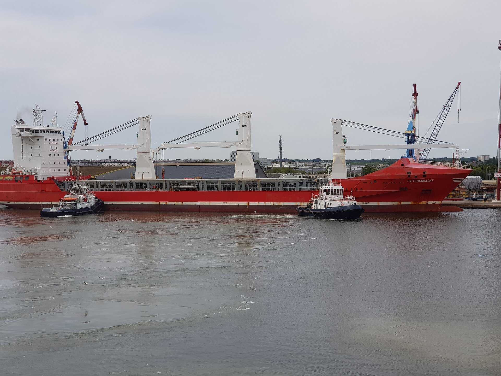
二隻のタグボートは、船腹に「TUG」と記された別々の点に舳先を当てて、大きな船の向きを変える。
Hellotheworld／CC BY-SA 4.0／Wikimedia Commons（サン＝ナゼール港、2019年）
MITATE 3｜見立て
雪吊りの縄は一本の柱の頂から放射状に降り、枝ごとに違う重みを、それぞれの縄の向きに引き受ける。
そらみみ／CC BY-SA 4.0／Wikimedia Commons（兼六園、2015年）
前半の目標の2つ目「使いこなす」のために、どの問題も同じ手順で解く。
釣合い $\sum\boldsymbol F_i=\boldsymbol 0$ と分解 $F_1\boldsymbol u_1+F_2\boldsymbol u_2=\boldsymbol F$ は同じ式である。未知の2力以外の既知の力を右辺に移し、符号を変えたものを $\boldsymbol F$ とおけばよい（「2本のロープの合力が、重さを打ち消す上向きの力に等しい」）。
天井の2点A、Bから、水平と30°をなすロープACとBCで、質量500 kgの物体を点Cに吊るす（ACとBCは左右対称）。ロープに必要な引張強さを求めよ。
解答
① 切り出す：点Cに働く力は、$T_A$（C→A）、$T_B$（C→B）、下向きの $W=500\times9.81=4905\ \mathrm{N}$（1.4節の確かめと同じく、物体を吊るロープの張力は $W$）。
② 座標軸：右を $x$、上を $y$。
③ 成分：C→A は左上30°なので (2.3) で $\theta=150^\circ$：$\boldsymbol{u}_A=(-\cos30^\circ,\ \sin30^\circ)=(-0.8660,\ 0.5000)$。C→B は $\theta=30^\circ$：$\boldsymbol{u}_B=(0.8660,\ 0.5000)$。重さは $(0,\ -4905)\ \mathrm N$。
④ 式：止まっているので (1.3)：$T_A\boldsymbol{u}_A+T_B\boldsymbol{u}_B+(0,\ -4905)=\boldsymbol 0$。重さを右辺に移すと $T_A\boldsymbol{u}_A+T_B\boldsymbol{u}_B=(0,\ 4905)$。
$x$ 成分：$-0.8660T_A+0.8660T_B=0$ → $T_A=T_B$（対称だから当然）。
$y$ 成分：$0.5000T_A+0.5000T_B=4905$。
⑤ 解く：$T_A=T_B=T$ を $y$ 成分の式に入れて $2\times0.5000\,T=4905$ → $T=4905\ \mathrm{N}\approx4.91\ \mathrm{kN}$。
（(5.2) でも確かめる：$d=(-0.8660)(0.5000)-(0.8660)(0.5000)=-0.8660$、$T_A=\{0.5000\cdot0-0.8660\cdot4905\}/(-0.8660)=4905\ \mathrm{N}$。）
⑥ 確かめる：どちらも正なので、張力は仮定どおりC→Aの向き（ロープが点Cを引っ張る）で、ロープは引っ張られている。30°で吊ると、各ロープに物体の重さと同じ 4.91 kN がかかる。1本で真上に吊るのと同じ強さが、2本のそれぞれに必要になる（2本に分けても半分にはならない）。
例題11で、もし安全率を5にとるなら（この値は説明のための仮定）、ロープには $4.91\times5\approx24.5\ \mathrm{kN}$ に耐える強さが必要になる。実際の値は用途や規格で決まる。
授業で出された問い。ポイントは「安全率が高い＝安全性が高い」ではないこと。
答えの目安：安全率が低いのは航空機のほう。旅客機の構造は、米国の基準（14 CFR 25.303）で、想定される最大の荷重（制限荷重）の1.5倍に耐えればよい、と決められている。自動車や一般の機械は、これより大きめの安全率をとることが多い。それでも、移動距離あたりで見た死亡事故の少なさでは、旅客機は自動車よりずっと安全な乗り物だとされる。
安全率は「分からなさ」に払う余裕である（読み物コラム「力は見えない」§五）。分母の「実際に発生する荷重」の見積もりがあいまいなほど、大きな安全率が必要になる。
さらに、安全率を上げても防げない危険がある。
安全率は安全性の一部を数字にしたものにすぎない。安全性は「荷重をどれだけ正しく知っているか」と「壊れたときにどう備えるか」で決まる。
川の流れで、浮きを上流向き（図の上向き）に 100 N の力で支える必要がある。水平なワイヤ $T_1$ と、水平から30°傾いたワイヤ $T_2$（左上向き）の張力を求めよ。
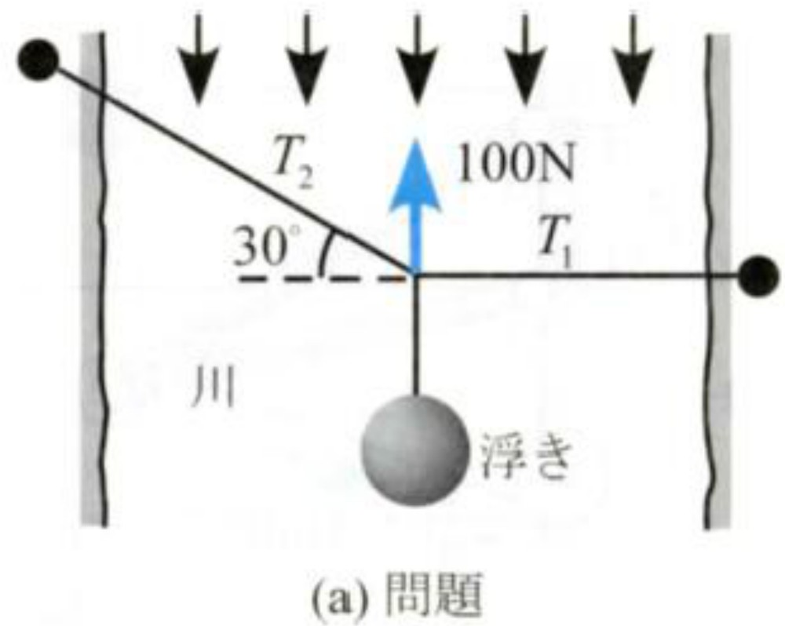
解答1（幾何学的解法）：$T_1$、$T_2$、100 N の矢印で三角形を作ると、直角三角形の辺の比から $$T_1\tan30^\circ=100\ \mathrm{N},\qquad T_2\cos60^\circ=100\ \mathrm{N}$$ $$T_1=100/\tan30^\circ=173\ \mathrm{N},\qquad T_2=100/\cos60^\circ=200\ \mathrm{N}$$
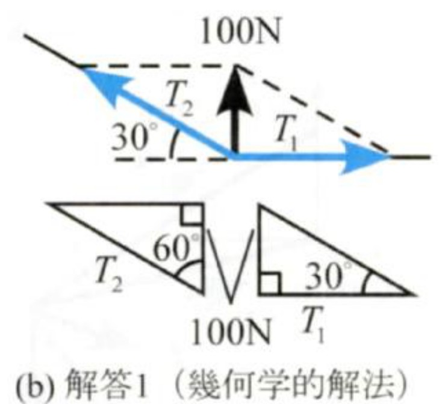
解答2（成分表示による解法）：
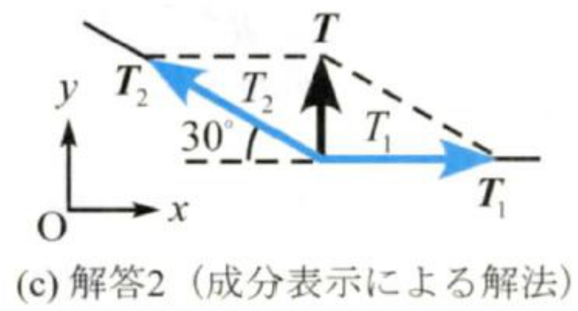
① 浮きをつないだ結び目に働く力：$\boldsymbol{T}_1$（右向き）、$\boldsymbol{T}_2$（左上30°）。この2力の合力が、必要な力 $\boldsymbol{T}$ に等しい。
② $x$ 右、$y$ 上。
③ $\boldsymbol{T}_1=(T_1,\ 0)$、$\boldsymbol{T}_2=(-T_2\cos30^\circ,\ T_2\sin30^\circ)$、$\boldsymbol{T}=(0,\ 100)\ \mathrm{N}$。
④ $\boldsymbol{T}_1+\boldsymbol{T}_2=\boldsymbol{T}$ を成分で書くと $$T_1-T_2\cos30^\circ=0,\qquad T_2\sin30^\circ=100\ \mathrm{N}$$
⑤ 2本目から $T_2=100/0.5=200\ \mathrm{N}$。1本目に入れて $T_1=200\times0.8660=173\ \mathrm{N}$。
⑥ 解答1と一致。$T_2$ のほうが大きいのは、$T_2$ だけが上向きの100 Nを受け持っているから（$T_2\sin30^\circ=100$）。
壁の点A(0, 0) m、B(0, 2) m から部材AC、BCが点C(5, −1) m に伸び、Cに滑車がある。モータからのワイヤ（張力1000 N、Cから見て左下20°の向き）と、真下に吊った重り（1000 N）が点Cを引く。点Cに働く力が、部材AC、BCの長さ方向に与える力を求めよ。
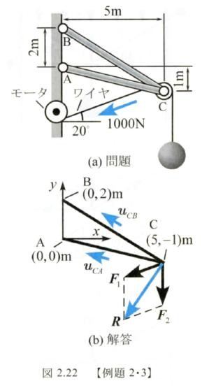
解答
① 切り出す：点Cに働く外力は $\boldsymbol{F}_1$（ワイヤ、左下20°）と $\boldsymbol{F}_2$（重り、真下）。これを部材の方向に分ける。
② 座標軸：$x$ 右、$y$ 上、原点A。
③ 成分（手順1：合力 $\boldsymbol{R}$ を求める。教科書 式2.24）：左下20°は (2.3) で $\theta=200^\circ$。$$\boldsymbol{F}_1=(-1000\cos20^\circ,\ -1000\sin20^\circ)=(-939.7,\ -342.0)\ \mathrm{N},\qquad \boldsymbol{F}_2=(0,\ -1000)\ \mathrm{N}$$ $$\boldsymbol{R}=\boldsymbol{F}_1+\boldsymbol{F}_2=(-939.7,\ -1342)\ \mathrm{N}$$ 部材の向きは例題5で求めた（教科書 式2.25）：$\boldsymbol{u}_{CA}=(-0.9806,\ 0.1961)$、$\boldsymbol{u}_{CB}=(-0.8575,\ 0.5145)$。
④ 式（手順2：分解）：$F_{CA}\boldsymbol{u}_{CA}+F_{CB}\boldsymbol{u}_{CB}=\boldsymbol{R}$。
⑤ 解く：(5.2) に $\boldsymbol{u}_1=\boldsymbol{u}_{CA}$、$\boldsymbol{u}_2=\boldsymbol{u}_{CB}$ として当てはめる。$$d=(-0.9806)(0.5145)-(-0.8575)(0.1961)=-0.5045+0.1682=-0.3364$$ $$\begin{aligned}F_{CA}&=\frac{u_{CBy}R_x-u_{CBx}R_y}{d}=\frac{(0.5145)(-939.7)-(-0.8575)(-1342)}{-0.3364}\\&=\frac{-483.5-1150.8}{-0.3364}=4.858\times10^3\ \mathrm{N}\end{aligned}$$ $$\begin{aligned}F_{CB}&=\frac{-u_{CAy}R_x+u_{CAx}R_y}{d}=\frac{-(0.1961)(-939.7)+(-0.9806)(-1342)}{-0.3364}\\&=\frac{184.3+1316.0}{-0.3364}=-4.460\times10^3\ \mathrm{N}\end{aligned}$$
⑥ 確かめる：代入すると $x$ 成分 $4858(-0.9806)+(-4460)(-0.8575)=-4764+3824=-940$、$y$ 成分 $4858(0.1961)+(-4460)(0.5145)=952.7-2294.7=-1342$ で $\boldsymbol{R}$ に戻る（丸めの範囲で一致）。
符号の意味：$F_{CA}\gt0$ なので、荷重の分力はC→Aの向き、つまり部材ACを壁に向かって押し込む（ACは圧縮）。$F_{CB}\lt0$ なので、分力はC→Bと逆向き、つまり部材BCを壁から引きはがす向き（BCは引張り）。
例題11で、ロープと水平のなす角を $\theta$ とする（左右対称）。張力 $T$ を $W$ と $\theta$ で表し、$\theta=90^\circ,\ 45^\circ,\ 30^\circ,\ 10^\circ,\ 1^\circ$ のときの $T/W$ を求めよ。
解答
① 点Cを切り出す：$T$（左上 $\theta$）、$T$（右上 $\theta$）、$W$（下）。対称なので2本の張力は等しい（例題11の $x$ 成分の式と同じ理由）。
② $x$ 右、$y$ 上。
③ $\boldsymbol u_A=(-\cos\theta,\ \sin\theta)$、$\boldsymbol u_B=(\cos\theta,\ \sin\theta)$、重さ $(0,\ -W)$。
④ $y$ 成分の釣合い：$T\sin\theta+T\sin\theta-W=0$。
⑤ $$T=\frac{W}{2\sin\theta}\qquad(6.2)$$ $\theta=90^\circ$：$T/W=0.500$。$45^\circ$：$1/(2\times0.7071)=0.707$。$30^\circ$：$1/(2\times0.5)=1.00$。$10^\circ$：$1/(2\times0.1736)=2.88$。$1^\circ$：$1/(2\times0.01745)=28.6$。
⑥ 確かめ：$\theta=90^\circ$（2本とも真上）で $W/2$ は、2本で重さを半分ずつ持つという直感と合う。$\theta=30^\circ$ で例題11の $T=W$ に戻る。ロープを水平に近づけるほど張力は急に大きくなり、$\theta\to0$ で $T\to\infty$。どんなに強く張った綱も、重みがかかれば必ず少したわむ（$\theta$ が 0 にはならない）のはこのためである。
PHOTO 4｜現実
ヘリコプターが車両を吊るとき、スリングの張力は荷の重さより大きくなり、吊り角が開くほど大きくなる。
Sgt. Jason Dangel（U.S. Army）／Public domain／Wikimedia Commons（2009年）
MITATE 4｜見立て
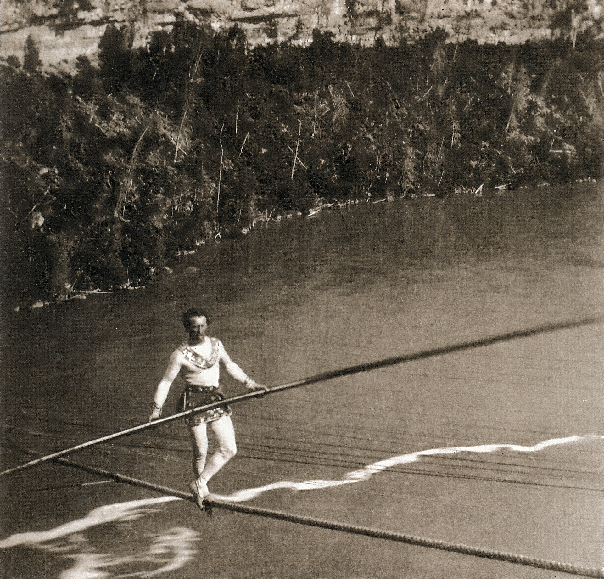
1859年にナイアガラを渡ったブロンダンの綱は、どれほど張っても一直線にはならず、人ひとりの重みで必ずたわむ。
William England／Public domain／Wikimedia Commons（1859年）
1点に、$x$ 軸から 0° の向きに 200 N、120° の向きに 150 N、225° の向きに 100 N の3力が働く。合力の大きさと向きを求めよ。
出典：本教材の自作。
解答
① 3力は1点に働くので、そのまま合成できる。
② $x$ 右、$y$ 上。
③ (2.3)：$\boldsymbol F_1=(200,\ 0)$、$\boldsymbol F_2=(150\cos120^\circ,\ 150\sin120^\circ)=(-75.00,\ 129.9)$、$\boldsymbol F_3=(100\cos225^\circ,\ 100\sin225^\circ)=(-70.71,\ -70.71)\ \mathrm N$。
④ (4.2)：$R_x=200-75.00-70.71=54.29$、$R_y=0+129.9-70.71=59.19\ \mathrm N$。
⑤ $R=\sqrt{54.29^2+59.19^2}=80.32\ \mathrm N$。$R_x\gt0$ なので向きは $\tan^{-1}(59.19/54.29)=47.47^\circ$。
⑥ 確かめ：$R_x\gt0,\ R_y\gt0$ で第1象限、47.5° と合う。大きさの和 450 N よりずっと小さい（力どうしが打ち消し合っている）。
原点Aに結んだロープが点 B(2, −3, 6) m へ張られ、張力は 700 N である。ロープが点Aを引く力を成分で書け。
出典：本教材の自作（第3回の予習）。
解答
① 点Aを切り出す。ロープは A を B の向きに引く。
② $x,y,z$ の直交座標（単位 m）。
③ (2.6)：A→B $=(2-0,\ -3-0,\ 6-0)=(2,\ -3,\ 6)$、長さ $\sqrt{4+9+36}=7$、$\boldsymbol u_{AB}=(2/7,\ -3/7,\ 6/7)$（例題4と同じ）。
④ 力＝大きさ×単位ベクトル：$\boldsymbol T=700\,\boldsymbol u_{AB}$。
⑤ $\boldsymbol T=(700\times2/7,\ 700\times(-3/7),\ 700\times6/7)=(200,\ -300,\ 600)\ \mathrm N$。
⑥ 確かめ：$\sqrt{200^2+300^2+600^2}=\sqrt{490000}=700\ \mathrm N$。
質量 100 kg の物体を、左のロープ（水平から 30°）と右のロープ（水平から 60°）で吊るす。各ロープの張力を求めよ。
出典：本教材の自作。
解答
① 結び目を切り出す：$T_A$（左上30°）、$T_B$（右上60°）、$W=100\times9.81=981\ \mathrm N$（下）。
② $x$ 右、$y$ 上。
③ $\boldsymbol u_A=(-\cos30^\circ,\ \sin30^\circ)=(-0.8660,\ 0.5000)$、$\boldsymbol u_B=(\cos60^\circ,\ \sin60^\circ)=(0.5000,\ 0.8660)$。
④ $T_A\boldsymbol u_A+T_B\boldsymbol u_B=(0,\ 981)$。
⑤ $d=(-0.8660)(0.8660)-(0.5000)(0.5000)=-0.7500-0.2500=-1.000$。(5.2)：$T_A=(0.8660\times0-0.5000\times981)/(-1.000)=490.5\ \mathrm N$、$T_B=(-0.5000\times0+(-0.8660)\times981)/(-1.000)=849.6\ \mathrm N$。
⑥ 確かめ：両方正（引っ張り）。$x$：$-0.8660\times490.5+0.5000\times849.6=-424.8+424.8=0$。立っているロープ（60°）のほうが大きな力を受け持つ。$d=-1$ になったのは、2本のロープが直交している（30°+60°=90°）から（5.4節の直交の場合）。
質量 26 g の鳥が、張った電話線の中央にとまっている。(a) 線の張力が $T=mg/(2\sin\theta)$ で計算できることを示せ。(b) $\theta=5^\circ$、(c) $\theta=0.5^\circ$ のときの張力を求めよ。線の左右半分はそれぞれ直線とみなす。
原文：A bird has a mass of 26 g and perches in the middle of a stretched telephone line. (a) Show that the tension in the line can be calculated using the equation T = mg / (2 sin θ). Determine the tension when (b) θ = 5° and (c) θ = 0.5°. Assume that each half of the line is straight.
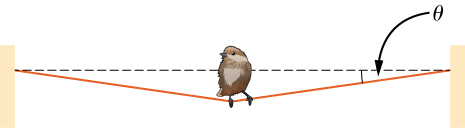
出典：OpenStax, University Physics Volume 1, Chapter 5 Problems, §5.6, Problem 63（CC BY-NC-SA 4.0）https://openstax.org/books/university-physics-volume-1/pages/5-problems。和訳は本教材。公式解答（(b) 1.5 N、(c) 15 N）と照合済み。
解答
① 鳥のいる点を切り出す：$mg$（下）、$T$（左上 $\theta$）、$T$（右上 $\theta$）。左右対称なので2つの張力の大きさは等しい。
② $x$ 右、$y$ 上。
③ $\boldsymbol T_{\text{左}}=T(-\cos\theta,\ \sin\theta)$、$\boldsymbol T_{\text{右}}=T(\cos\theta,\ \sin\theta)$、$\boldsymbol W=(0,\ -mg)$。
④ (1.3)：$x$ 成分は $-T\cos\theta+T\cos\theta=0$ で自動的に成り立つ。$y$ 成分は $2T\sin\theta-mg=0$。
⑤ (a) $T=\dfrac{mg}{2\sin\theta}$（例題14の (6.2) と同じ式）。$mg=0.026\times9.80=0.2548\ \mathrm N$。(b) $T=0.2548/(2\sin5^\circ)=0.2548/(2\times0.08716)=1.46\ \mathrm N\approx1.5\ \mathrm N$。(c) $T=0.2548/(2\sin0.5^\circ)=0.2548/(2\times0.008727)=14.6\ \mathrm N\approx15\ \mathrm N$。
⑥ 確かめ：$\theta$ を 1/10 にすると $T$ はほぼ10倍（小さい角では $\sin\theta\approx\theta$ [rad]）。26 g（重さ 0.25 N）の鳥でも、ほとんどたるまない線には 15 N（鳥の重さの約57倍）がかかる。$g=9.81$ でも 3 桁の答えは同じ（1.46 N、14.6 N）。原文は有効数字2桁なので、答えも2桁で書く。
信号機の重さが $2.00\times10^2\ \mathrm N$ のとき、信号機を支える3本のケーブルそれぞれの張力を求めよ。
原文：Find the tension in each of the three cables supporting the traffic light if it weighs 2.00 × 10² N.
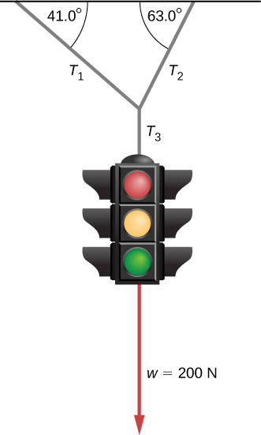
出典：OpenStax, University Physics Volume 1, Chapter 6 Problems, §6.1, Problem 26（CC BY-NC-SA 4.0）https://openstax.org/books/university-physics-volume-1/pages/6-problems。和訳は本教材。偶数番の問題で公式解答が公開されていないため、自作の解答・未照合。
解答
① 2段階で切り出す。(i) 信号機だけ：$T_3$（上）と $w$（下）の釣合いで $T_3=200\ \mathrm N$。(ii) 結び目：$T_1$（左上）、$T_2$（右上）、$T_3=200\ \mathrm N$（下）。天井は水平なので、図の角は水平からの角。
② $x$ 右、$y$ 上。
③ $\boldsymbol T_1=T_1(-\cos41.0^\circ,\ \sin41.0^\circ)=T_1(-0.7547,\ 0.6561)$、$\boldsymbol T_2=T_2(\cos63.0^\circ,\ \sin63.0^\circ)=T_2(0.4540,\ 0.8910)$、$\boldsymbol T_3=(0,\ -200)$。
④ $x$：$-0.7547T_1+0.4540T_2=0$。$y$：$0.6561T_1+0.8910T_2-200=0$。
⑤ $x$ の式から $T_1=(0.4540/0.7547)T_2=0.6015T_2$。$y$ の式に入れて $(0.6015\times0.6561+0.8910)T_2=1.2856T_2=200$、$T_2=155.6\ \mathrm N$、$T_1=0.6015\times155.6=93.6\ \mathrm N$。
別解（力の三角形と正弦定理）：3力をつなぐと閉じた三角形になり、$T_3$ の向かいの角は $180^\circ-41^\circ-63^\circ=76^\circ$、$T_1$ の向かいは $90^\circ-63^\circ=27^\circ$、$T_2$ の向かいは $90^\circ-41^\circ=49^\circ$。$T_1=200\sin27^\circ/\sin76^\circ=93.6\ \mathrm N$、$T_2=200\sin49^\circ/\sin76^\circ=155.6\ \mathrm N$。
⑥ 確かめ：$T_2\gt T_1$（急なほうのケーブルが多く受け持つ。例題17と同じ傾向）。$T_1+T_2=249\ \mathrm N\gt200\ \mathrm N$ なのは、水平成分どうしが打ち消し合うぶん余計に引いているから（4.2節の $F_1+F_2\neq R$）。よくある誤り：角を鉛直から測ったと読むと $T_1=183.7$、$T_2=135.2\ \mathrm N$ となり、大小が逆転する。
大きさ 800 kN の力 $\boldsymbol F$ の、$a$ 方向と $b$ 方向のスカラー成分を求めよ。$b$ 軸は $a$ 軸から反時計回りに 60°、$\boldsymbol F$ は $a$ 軸から反時計回りに 135° の向きである。注：スカラー成分とは、対応するベクトル成分（分力）の大きさに、向きを表す + または − をつけた値である。軸のラベルのある端を向いていれば正、反対なら負。
原文（抜粋）：Determine the scalar components of 800 kN force F in the a- and b- directions. Note: A Scalar component is a scalar value equal to the magnitude of the corresponding vector component, but with a + or − sign to indicate its sense. The positive direction is towards the labeled end of the axis.
出典：T. Baker & D. Haynes, Engineering Statics: Open and Interactive, §2.9 Exercises “Arbitrary components”（CC BY-NC-SA 4.0）https://engineeringstatics.org/Chapter_02-11.html。和訳は本教材。数値は一例（原問題は開くたびに数値が変わる。ここでは $F=800\ \mathrm{kN}$、135°、60° を採用）。自作の解答・未照合（同書の解説の式 $F_a=-F\sin(\theta-\beta)/\sin\beta$、$F_b=F\sin(180^\circ-\theta)/\sin\beta$ とは一致）。
解答
① $\boldsymbol F$ を $a$ 方向・$b$ 方向の分力の和として表す（平行四辺形）。
② $a$ 軸を $x$ 軸にとる：$\boldsymbol a=(1,\ 0)$、$\boldsymbol b=(\cos60^\circ,\ \sin60^\circ)=(0.5000,\ 0.8660)$。
③ $\boldsymbol F=800(\cos135^\circ,\ \sin135^\circ)=(-565.7,\ 565.7)\ \mathrm{kN}$。
④ $F_a\boldsymbol a+F_b\boldsymbol b=\boldsymbol F$：$x$：$F_a+0.5000F_b=-565.7$、$y$：$0.8660F_b=565.7$。
⑤ $y$ から $F_b=+653.2\ \mathrm{kN}$。$x$ に入れて $F_a=-565.7-326.6=-892.3\ \mathrm{kN}$。(5.2) でも：$d=1\times0.8660-0.5000\times0=0.8660$、$F_a=(0.8660\times(-565.7)-0.5000\times565.7)/0.8660=-892.3$、$F_b=(0+1\times565.7)/0.8660=653.2$。
別解（正弦定理）：分力と $\boldsymbol F$ が作る三角形の内角は 45°・75°・60° で、$|F_a|=800\sin75^\circ/\sin60^\circ=892.3$、$|F_b|=800\sin45^\circ/\sin60^\circ=653.2$。
⑥ 答え：$F_a=-892\ \mathrm{kN}$、$F_b=+653\ \mathrm{kN}$。$F_a\lt0$ は、$a$ のラベルのない端の向き（左向き）。成分の大きさ 892 kN が元の 800 kN より大きいのは、非直交分解だから（5.4節）。よくある誤り：内積 $\boldsymbol F\cdot\boldsymbol a=-565.7$、$\boldsymbol F\cdot\boldsymbol b=207.1$ は直交射影であって、この問題の分力ではない。
出典：本教材の自作。
① (1) $W=mg=2.50\times9.81=24.525$。3桁で $24.5\ \mathrm N$。
② (2) $4905\ \mathrm N=4.905\ \mathrm{kN}$、3桁に丸めて $4.91\ \mathrm{kN}$（$4.91\times10^3\ \mathrm N$）。
出典：本教材の自作。
① (1) (2.9)：$3\times4+4\times(-3)=0$。内積が 0 なので $\cos\theta=0$、2つは直交している。
② (2) $\cos\theta=\boldsymbol a\cdot\boldsymbol c/(ac)=3/(5\times1)=0.600$、$\theta=53.1^\circ$（例題3の $\alpha$ と同じ）。
出典：本教材の自作。
① (6.2)：$T=W/(2\sin45^\circ)=4905/(2\times0.7071)=3468\ \mathrm{N}\approx3.47\ \mathrm{kN}$。
② 30° のとき（4.91 kN）より小さい。ロープを立てるほど、各ロープの負担は減る（図6.3）。
出典：本教材の自作。
① $\boldsymbol u_2=(0.5000,\ 0.8660)$。$d=1\times0.8660-0.5000\times0=0.8660$。
② (5.2)：$F_1=(0.8660\times100-0.5000\times50)/0.8660=(86.60-25.00)/0.8660=71.13\ \mathrm N$、$F_2=(-0\times100+1\times50)/0.8660=57.74\ \mathrm N$。
③ 検算：$x$：$71.13+57.74\times0.5000=100.0$、$y$：$57.74\times0.8660=50.00$。どちらも正なので、分力は $\boldsymbol u_1,\boldsymbol u_2$ と同じ向き。
出典：本教材の自作。
① $d=1\times0-(-1)\times0=0$ となり、(5.2) は 0 で割ることになって使えない。
② $\boldsymbol{u}_1$ と $\boldsymbol{u}_2$ は同じ直線（$x$ 軸）上の向きなので、$y$ 成分をもつ力はどう組み合わせても作れない（解なし）。$y$ 成分が 0 の力なら、逆に組み合わせ方が無数にある（解が一つに決まらない）。2.8節の「平行な2直線」と同じ状況である。
出典：T. Baker & D. Haynes, Engineering Statics: Open and Interactive, §2.9 Exercises “Vector Addition: no diagram”（CC BY-NC-SA 4.0）https://engineeringstatics.org/Chapter_02-11.html。和訳は本教材。数値は一例（原問題は開くたびに数値が変わる）。自作の解答・未照合。
① (1) $\boldsymbol A$：負の $x$ 軸から反時計回りに 30° は、正の $x$ 軸から $180^\circ+30^\circ=210^\circ$。$\boldsymbol A=40(\cos210^\circ,\ \sin210^\circ)=(-34.64,\ -20.00)\ \mathrm N$。
② $\boldsymbol B$：向きは $(-4,\ 3)$、長さ 5 なので単位ベクトル $(-0.8,\ 0.6)$。$\boldsymbol B=50(-0.8,\ 0.6)=(-40.00,\ 30.00)\ \mathrm N$。$\boldsymbol C=(0,\ -20.00)\ \mathrm N$。
③ (3) $\boldsymbol R=(-34.64-40.00+0,\ -20.00+30.00-20.00)=(-74.64,\ -10.00)\ \mathrm N$。
④ (4) $R=\sqrt{74.64^2+10.00^2}=75.31\ \mathrm N$。$R_x\lt0,\ R_y\lt0$ で第3象限。$\tan^{-1}(10.00/74.64)=7.63^\circ$ をそのまま答えると誤り。正しくは $180^\circ+7.63^\circ=187.6^\circ$（$=-172.4^\circ$、負の $x$ 軸から下へ 7.63°）。
出典：T. Baker & D. Haynes, Engineering Statics: Open and Interactive, §2.9 Exercises “Rectangular components: P to R”（CC BY-NC-SA 4.0）https://engineeringstatics.org/Chapter_02-11.html。和訳は本教材。数値は一例（原問題は角度の与え方も含めて開くたびに変わる）。自作の解答・未照合。
① (a) (2.3)：$F_x=250\cos150^\circ=-216.5\ \mathrm N$、$F_y=250\sin150^\circ=+125.0\ \mathrm N$。
② (b) 回した軸の単位ベクトル：$\boldsymbol e_{x'}=(\cos40^\circ,\ \sin40^\circ)$、$\boldsymbol e_{y'}=(-\sin40^\circ,\ \cos40^\circ)$（直交していることは内積 0 で確かめられる）。直交分解なので (5.1) の内積が使える。
③ $F_{x'}=\boldsymbol F\cdot\boldsymbol e_{x'}=250(\cos150^\circ\cos40^\circ+\sin150^\circ\sin40^\circ)=250\cos(150^\circ-40^\circ)=250\cos110^\circ=-85.51\ \mathrm N$。
（加法定理の出所：単位ベクトル $(\cos\alpha,\sin\alpha)$ と $(\cos\beta,\sin\beta)$ のなす角は $\alpha-\beta$ なので、内積の定義 (2.7) と成分の式 (2.9) を等しいとおくと $\cos(\alpha-\beta)=\cos\alpha\cos\beta+\sin\alpha\sin\beta$。）
④ $F_{y'}=\boldsymbol F\cdot\boldsymbol e_{y'}=250(-\cos150^\circ\sin40^\circ+\sin150^\circ\cos40^\circ)=250\sin(150^\circ-40^\circ)=250\sin110^\circ=+234.9\ \mathrm N$。
⑤ 確かめ：$\sqrt{85.51^2+234.9^2}=250.0\ \mathrm N$。軸を回しても大きさは変わらない。$\boldsymbol F$ は $x'$ 軸から 110° の向きなので、$x'$ 成分が負・$y'$ 成分が正で合う。
原文：Find the angles that vector D = (2.0 i − 4.0 j + k) m makes with the x-, y-, and z-axes.
出典：OpenStax, University Physics Volume 1, Chapter 2 Problems, §2.4, Problem 65（CC BY-NC-SA 4.0）https://openstax.org/books/university-physics-volume-1/pages/2-problems。和訳は本教材。公式解答（64.12°、150.79°、77.39°）と照合済み（$\theta_z$ は丸め方で 0.01° 違う。真値は 77.396°）。
① $D=\sqrt{2.0^2+4.0^2+1^2}=\sqrt{21}=4.583\ \mathrm m$。
② (2.5)：$\cos\theta_x=2.0/4.583=0.4364$、$\cos\theta_y=-4.0/4.583=-0.8729$、$\cos\theta_z=1/4.583=0.2182$。
③ $\theta_x=64.12^\circ$、$\theta_y=150.79^\circ$、$\theta_z=77.40^\circ$。
④ 確かめ：$0.4364^2+0.8729^2+0.2182^2=1.000$。$y$ 成分が負なので $\theta_y\gt90^\circ$。
原文：What is the component of the force vector G = (3.0 i + 4.0 j + 10.0 k) N along the force vector H = (1.0 i + 4.0 j) N?
出典：OpenStax, University Physics Volume 1, Chapter 2 Challenge Problems, Problem 89（CC BY-NC-SA 4.0）https://openstax.org/books/university-physics-volume-1/pages/2-challenge-problems。和訳は本教材。公式解答（約 4.6 N）と照合済み。
① $\boldsymbol H$ の向きの単位ベクトルを作る：$H=\sqrt{1+16}=\sqrt{17}=4.123$、$\boldsymbol u_H=(1,\ 4,\ 0)/4.123$。
② (2.8)：$G_H=\boldsymbol G\cdot\boldsymbol u_H=(3.0\times1+4.0\times4+10.0\times0)/4.123=19.0/4.123=4.61\ \mathrm N$。
③ ベクトルとして書くなら $G_H\boldsymbol u_H=4.61\times(0.2425,\ 0.9701,\ 0)=(1.118,\ 4.471,\ 0)\ \mathrm N$。
④ 確かめ：$G=\sqrt{9+16+100}=11.18\ \mathrm N$ で、なす角は $\cos^{-1}(4.61/11.18)=65.7^\circ$。$\boldsymbol G$ の大部分は $z$ 方向で、$\boldsymbol H$ は $xy$ 面内にあるので、成分が小さいのは妥当。よくある誤り：$\boldsymbol G\cdot\boldsymbol H=19.0$ で止める（単位が $\mathrm N^2$ になってしまう。$\boldsymbol H$ は長さ1ではない）。
原文：Vector B is 5.0 cm long and vector A is 4.0 cm long. Find the angle between these two vectors when |A + B| = 3.0 cm.
出典：OpenStax, University Physics Volume 1, Chapter 2 Challenge Problems, Problem 88（CC BY-NC-SA 4.0）https://openstax.org/books/university-physics-volume-1/pages/2-challenge-problems。和訳は本教材。偶数番の問題で公式解答が公開されていないため、自作の解答・未照合。
① 4.3節の (4.3)（内積の展開）を使う：$|\boldsymbol A+\boldsymbol B|^2=A^2+B^2+2AB\cos\varphi$。
② 代入：$3.0^2=4.0^2+5.0^2+2\times4.0\times5.0\cos\varphi$、$9=41+40\cos\varphi$。
③ $\cos\varphi=-32/40=-0.80$、$\varphi=143.1^\circ$。
④ 確かめ：$\boldsymbol A=(4,0)$、$\boldsymbol B=5(\cos143.1^\circ,\ \sin143.1^\circ)=(-4.0,\ 3.0)$ とおくと $\boldsymbol A+\boldsymbol B=(0,\ 3.0)$ で長さ 3.0。3-4-5 の直角三角形になっている（$\boldsymbol A\cdot(\boldsymbol A+\boldsymbol B)=0$）。よくある誤り：三角形の内角 $36.9^\circ$（$=180^\circ-143.1^\circ$）を「なす角」と答える。なす角は根元をそろえて測る。
| 講義資料（スライド） | 本教材 |
|---|---|
| 1・1 力学とは（静力学・動力学・ニュートン） | 1.1 |
| ニュートンの法則／第二法則の注 | 1.2／1.3 |
| 1・3 単位・有効数字 | 1.5 |
| 前半の目標・マニピュレータ | 序 |
| 今日のポイント「力はベクトル」、2・1 力（図2.1・2.2） | 3章 |
| ベクトルの表し方・成分表示 (2.1) | 2.1 |
| ベクトルの使い方4つ | 2章冒頭（外積は第2回） |
| 単位ベクトル (2.9)／基本ベクトル (2.10) | 2.5／2.3 |
| 内積 (2.65)、図2.54 | 2.7 |
| 力の合成 (2.12) | 4章 |
| 力の分解、一般的な分解方法 (2.23) | 5章 |
| 例題（ロープ）・安全率 | 6.2・6.3 |
| 例題2・2／例題2・3 (2.24)(2.25) | 6.4／6.5 |

,_title,_p._5,_color.jpg){kind=link}


.jpg){kind=link}